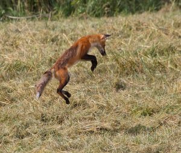

Mammals
Mammals
Woodland Mammals are a very important in there eco systems, because they are the predator and the prey. One of the many ways to demonstrate this is the eastern chipmunk although they feed on Swallowtail caterpillars and butterflies, they are hunted by the foxes. There is an important balance given by predator and prey without it anything would do whatever it pleased.
The Role of the Predator
A true predator can commonly be known as one that kills and eats another living thing. Whereas other types of predator all harm their prey in some way, this form kills them. Predators may hunt actively for prey, or sit and wait for prey to approach within striking distance, as in ambush predators. Some predators kill large prey and dismember or chew it prior to eating it
The Role of the Prey

The term Prey refers to an animal hunted or seized for food, especially by a carnivorous animal. While predators are on the top of the food chain and hunt for the smaller less fearce animals teh "Prey" does also hunt for food to survive it is not the "Apex Predator" if you will. Although life is harsh they still carry on.